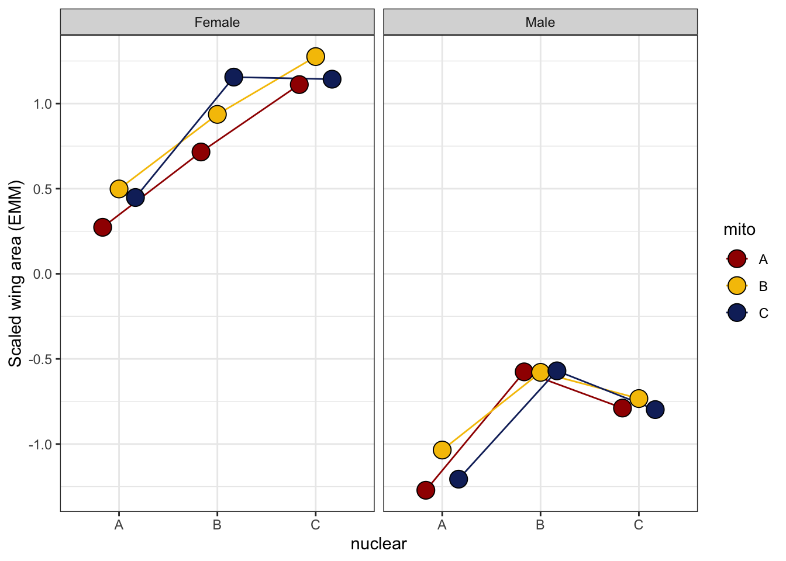

Body size analysis
Martin Garlovsky
2022-08-04
Last updated: 2024-10-09
Checks: 7 0
Knit directory: mito_age_fert/
This reproducible R Markdown analysis was created with workflowr (version 1.7.1). The Checks tab describes the reproducibility checks that were applied when the results were created. The Past versions tab lists the development history.
Great! Since the R Markdown file has been committed to the Git repository, you know the exact version of the code that produced these results.
Great job! The global environment was empty. Objects defined in the global environment can affect the analysis in your R Markdown file in unknown ways. For reproduciblity it’s best to always run the code in an empty environment.
The command set.seed(20230213) was run prior to running
the code in the R Markdown file. Setting a seed ensures that any results
that rely on randomness, e.g. subsampling or permutations, are
reproducible.
Great job! Recording the operating system, R version, and package versions is critical for reproducibility.
Nice! There were no cached chunks for this analysis, so you can be confident that you successfully produced the results during this run.
Great job! Using relative paths to the files within your workflowr project makes it easier to run your code on other machines.
Great! You are using Git for version control. Tracking code development and connecting the code version to the results is critical for reproducibility.
The results in this page were generated with repository version 5f6332f. See the Past versions tab to see a history of the changes made to the R Markdown and HTML files.
Note that you need to be careful to ensure that all relevant files for
the analysis have been committed to Git prior to generating the results
(you can use wflow_publish or
wflow_git_commit). workflowr only checks the R Markdown
file, but you know if there are other scripts or data files that it
depends on. Below is the status of the Git repository when the results
were generated:
Ignored files:
Ignored: .DS_Store
Ignored: .Rhistory
Ignored: .Rproj.user/
Ignored: data/.DS_Store
Untracked files:
Untracked: README.html
Untracked: analysis/SNP_clusters.Rmd
Untracked: analysis/female_fertility.Rmd
Untracked: analysis/male_fertility.Rmd
Untracked: check_lines.R
Untracked: code/data_wrangling.R
Untracked: code/plotting_Script.R
Untracked: data/Data_raw_emmely.csv
Untracked: data/defence.csv
Untracked: data/male_fertility.csv
Untracked: data/mito_34sigdiffSNPs_consensus_incl_colnames.csv
Untracked: data/mito_mt_copy_number.xlsx
Untracked: data/mito_mt_seq_major_alleles_sig_snptable.csv
Untracked: data/mito_mt_seq_sig_annotated.csv
Untracked: data/mito_mt_seq_sig_annotated.vcf
Untracked: data/offence.csv
Untracked: data/rawdata_PCA.csv
Untracked: data/snp-gene.txt
Untracked: data/sperm_metabolic_rate.csv
Untracked: data/sperm_viability.csv
Untracked: data/wrangled/
Untracked: figures/
Untracked: output/SNP_clusters.csv
Untracked: output/bod_brm.rds
Untracked: output/female_rate_dredge.rds
Untracked: output/female_rates_bb.Rdata
Untracked: output/female_rates_boot.Rdata
Untracked: output/female_rates_poly.Rdata
Untracked: output/male_fec_dredge.rds
Untracked: output/male_hatch_dredge.rds
Untracked: output/male_hatch_dredge_reduced.rds
Untracked: output/sperm_met_dredge.rds
Untracked: output/viab_ctrl_dredge.rds
Untracked: output/viab_trt_dredge.rds
Untracked: snp_matrix_dobler.csv
Unstaged changes:
Modified: analysis/index.Rmd
Modified: analysis/sperm_comp.Rmd
Modified: data/README.md
Note that any generated files, e.g. HTML, png, CSS, etc., are not included in this status report because it is ok for generated content to have uncommitted changes.
These are the previous versions of the repository in which changes were
made to the R Markdown (analysis/body_size.Rmd) and HTML
(docs/body_size.html) files. If you’ve configured a remote
Git repository (see ?wflow_git_remote), click on the
hyperlinks in the table below to view the files as they were in that
past version.
| File | Version | Author | Date | Message |
|---|---|---|---|---|
| Rmd | 5f6332f | MartinGarlovsky | 2024-10-09 | wflow_publish("analysis/body_size.Rmd") |
Load packages
library(tidyverse)
library(lme4)
library(DHARMa)
library(emmeans)
library(kableExtra)
library(knitrhooks) # install with devtools::install_github("nathaneastwood/knitrhooks")
library(showtext)
output_max_height() # a knitrhook option
options(stringsAsFactors = FALSE)
# colour palettes
met.pal <- MetBrewer::met.brewer('Johnson')
met3 <- met.pal[c(1, 3, 5)]
# set contrasts
options(contrasts = c("contr.sum", "contr.poly"))Load data
bd_dat <- read.csv('data//wrangled/body_data.csv') %>%
mutate(mito_snp = as.factor(mito_snp),
coevolved = if_else(mito == nuclear, "matched", "mismatched"))Geography based analysis
We collected 4 offspring of each sex from 4 females - a family
(fam) in our analysis - and measured landmarks on the wing
as a proxy for body size. We modelled body size with a linear mixed
model, with scaled wing area as the response.
Look at the raw data
bd_dat %>%
ggplot(aes(x = nuclear, y = scaled_area, fill = mito)) +
geom_boxplot() +
facet_wrap(~sex, scales = 'free_x') +
scale_colour_manual(values = met3) +
scale_fill_manual(values = met3) +
theme_bw() +
theme() +
NULLhist(bd_dat$scaled_area, breaks = 50)
b1full <- lmerTest::lmer(scaled_area ~ mito * nuclear * sex + (sex|LINE) + (1|fam),
data = bd_dat, REML = TRUE)Check model diagnostics
performance::check_model(b1full)Results
anova(b1full, type = "III", ddf = "Kenward-Roger") %>% broom::tidy() %>%
as_tibble() %>%
kable(digits = 3,
caption = 'Type III Analysis of Variance Table with Kenward-Roger`s method') %>%
kable_styling(full_width = FALSE)| term | sumsq | meansq | NumDF | DenDF | statistic | p.value |
|---|---|---|---|---|---|---|
| mito | 0.107 | 0.054 | 2 | 18 | 0.601 | 0.559 |
| nuclear | 1.886 | 0.943 | 2 | 18 | 10.569 | 0.001 |
| sex | 35.956 | 35.956 | 1 | 18 | 403.047 | 0.000 |
| mito:nuclear | 0.061 | 0.015 | 4 | 18 | 0.172 | 0.950 |
| mito:sex | 0.081 | 0.040 | 2 | 18 | 0.454 | 0.642 |
| nuclear:sex | 0.476 | 0.238 | 2 | 18 | 2.667 | 0.097 |
| mito:nuclear:sex | 0.074 | 0.018 | 4 | 18 | 0.206 | 0.932 |
#summary(b1full)
bind_rows(emmeans(b1full, pairwise ~ sex, adjust = "tukey")$contrasts %>% as_tibble(),
emmeans(b1full, pairwise ~ nuclear, adjust = "tukey")$contrasts %>% as_tibble()) %>%
kable(digits = 3,
caption = 'Posthoc Tukey tests to compare which groups differ') %>%
kable_styling(full_width = FALSE) %>%
kableExtra::group_rows("Sex", 1, 1) %>%
kableExtra::group_rows("Nuclear", 2, 4)| contrast | estimate | SE | df | t.ratio | p.value |
|---|---|---|---|---|---|
| Sex | |||||
| f - m | 1.679 | 0.084 | 18 | 20.076 | 0.000 |
| Nuclear | |||||
| A - B | -0.563 | 0.144 | 18 | -3.905 | 0.003 |
| A - C | -0.584 | 0.144 | 18 | -4.054 | 0.002 |
| B - C | -0.021 | 0.144 | 18 | -0.149 | 0.988 |
Reaction norms
body2_emm <- emmeans(b1full, ~ mito * nuclear * sex)
# reaction norms
body_norms <- emmeans(body2_emm, ~ mito * nuclear * sex, type = 'response') %>% as_tibble() %>%
ggplot(aes(x = nuclear, y = emmean, fill = mito)) +
geom_line(aes(group = mito, colour = mito), position = position_dodge(width = .5)) +
geom_point(size = 3, pch = 21, position = position_dodge(width = .5)) +
labs(y = 'Scaled wing area (EMM)') +
scale_colour_manual(values = met3) +
scale_fill_manual(values = met3) +
facet_wrap(~ sex, labeller = as_labeller(c(f = "Female", m = "Male"))) +
theme_bw() +
theme()
body_norms
Raw data with means
body_size <- emmeans(body2_emm, ~ mito * nuclear * sex, type = 'response') %>% as_tibble() %>%
ggplot(aes(x = nuclear, y = emmean, fill = mito)) +
geom_jitter(data = bd_dat,
aes(y = scaled_area, colour = mito),
position = position_jitterdodge(dodge.width = .5, jitter.width = .1),
size = 0.75, alpha = .1) +
geom_jitter(data = bd_dat %>%
group_by(LINE, sex) %>%
summarise(mn = mean(scaled_area)) %>%
separate(LINE, into = c("mito", "nuclear", NA), sep = "(?<=.)", remove = FALSE),
aes(y = mn, colour = mito),
position = position_jitterdodge(dodge.width = .5, jitter.width = .1),
alpha = .85, size = 2) +
geom_errorbar(aes(ymin = lower.CL, ymax = upper.CL),
width = .25, position = position_dodge(width = .5)) +
geom_point(size = 3, pch = 21, position = position_dodge(width = .5)) +
labs(y = 'Scaled wing area (EMM ± 95% CIs)') +
scale_colour_manual(values = met3) +
scale_fill_manual(values = met3) +
facet_wrap(~ sex, labeller = as_labeller(c(f = "Female", m = "Male"))) +
theme_bw() +
theme() +
geom_text(data = bd_dat %>% group_by(mito, nuclear, sex) %>% count(), aes(y = -2.2, label = n),
size = 2, position = position_dodge(width = .5)) +
NULL
body_sizeMatched vs. mismatched
body_matched_lmerTest <- lmerTest::lmer(scaled_area ~ sex * coevolved + (sex|LINE) + (1|fam),
data = bd_dat, REML = TRUE)
anova(body_matched_lmerTest, type = "III", ddf = "Kenward-Roger")Type III Analysis of Variance Table with Kenward-Roger's method
Sum Sq Mean Sq NumDF DenDF F value Pr(>F)
sex 31.773 31.773 1 25 356.1571 2.647e-16 ***
coevolved 0.019 0.019 1 25 0.2154 0.6466
sex:coevolved 0.001 0.001 1 25 0.0111 0.9169
---
Signif. codes: 0 '***' 0.001 '**' 0.01 '*' 0.05 '.' 0.1 ' ' 1
#summary(body_matched_lmerTest)Mito-type analysis
snp_full <- lmerTest::lmer(scaled_area ~ mito_snp * nuclear * sex + (sex|LINE) + (1|fam),
data = bd_dat,
na.action = 'na.fail', REML = TRUE)
anova(snp_full, type = "III", ddf = "Kenward-Roger")Type III Analysis of Variance Table with Kenward-Roger's method
Sum Sq Mean Sq NumDF DenDF F value Pr(>F)
mito_snp 0.609 0.076 8 9 0.8532 0.583216
nuclear 1.364 0.682 2 9 7.6439 0.011477 *
sex 95.474 95.474 1 9 1070.1992 1.147e-10 ***
mito_snp:nuclear 1.168 0.167 7 9 1.8699 0.187948
mito_snp:sex 2.187 0.273 8 9 3.0639 0.057706 .
nuclear:sex 1.797 0.898 2 9 10.0688 0.005059 **
mito_snp:nuclear:sex 4.200 0.600 7 9 6.7254 0.005424 **
---
Signif. codes: 0 '***' 0.001 '**' 0.01 '*' 0.05 '.' 0.1 ' ' 1
# snp_full_emm <- emmeans(snp_full, ~ mito_snp * nuclear * sex)
# pairs(snp_full_emm, simple = "each")
emmeans(snp_full, ~ mito_snp * nuclear * sex) %>% as_tibble() %>% drop_na() %>%
ggplot(aes(x = nuclear, y = emmean, fill = mito_snp)) +
geom_jitter(data = bd_dat,
aes(y = scaled_area, colour = mito_snp),
position = position_jitterdodge(dodge.width = .5, jitter.width = .1),
alpha = .25) +
geom_errorbar(aes(ymin = lower.CL, ymax = upper.CL),
width = .25, position = position_dodge(width = .5)) +
geom_point(size = 3, pch = 21, position = position_dodge(width = .5)) +
labs(y = 'Scaled wing area (EMM ± 95% CIs)') +
scale_colour_viridis_d(option = "H") +
scale_fill_viridis_d(option = "H") +
facet_wrap(~sex, labeller = as_labeller(c(f = "Female", m = "Male"))) +
theme_bw() +
theme() +
#ggsave('figures/body_size_mitocluster.pdf', height = 3.5, width = 7.5, dpi = 600, useDingbats = FALSE) +
NULL
sessionInfo()R version 4.4.0 (2024-04-24) Platform: aarch64-apple-darwin20 Running under: macOS Sonoma 14.6.1 Matrix products: default BLAS: /Library/Frameworks/R.framework/Versions/4.4-arm64/Resources/lib/libRblas.0.dylib LAPACK: /Library/Frameworks/R.framework/Versions/4.4-arm64/Resources/lib/libRlapack.dylib; LAPACK version 3.12.0 locale: [1] en_US.UTF-8/en_US.UTF-8/en_US.UTF-8/C/en_US.UTF-8/en_US.UTF-8 time zone: Europe/London tzcode source: internal attached base packages: [1] stats graphics grDevices utils datasets methods base other attached packages: [1] showtext_0.9-7 showtextdb_3.0 sysfonts_0.8.9 knitrhooks_0.0.4 [5] knitr_1.48 kableExtra_1.4.0 emmeans_1.10.3 DHARMa_0.4.6 [9] lme4_1.1-35.5 Matrix_1.7-0 lubridate_1.9.3 forcats_1.0.0 [13] stringr_1.5.1 dplyr_1.1.4 purrr_1.0.2 readr_2.1.5 [17] tidyr_1.3.1 tibble_3.2.1 ggplot2_3.5.1 tidyverse_2.0.0 [21] workflowr_1.7.1 loaded via a namespace (and not attached): [1] tidyselect_1.2.1 viridisLite_0.4.2 farver_2.1.2 [4] fastmap_1.2.0 bayestestR_0.13.2 promises_1.3.0 [7] digest_0.6.36 timechange_0.3.0 estimability_1.5.1 [10] lifecycle_1.0.4 processx_3.8.4 magrittr_2.0.3 [13] compiler_4.4.0 rlang_1.1.4 sass_0.4.9 [16] tools_4.4.0 utf8_1.2.4 yaml_2.3.9 [19] labeling_0.4.3 xml2_1.3.6 numDeriv_2016.8-1.1 [22] withr_3.0.0 datawizard_0.11.0 grid_4.4.0 [25] fansi_1.0.6 git2r_0.33.0 xtable_1.8-4 [28] colorspace_2.1-0 scales_1.3.0 MASS_7.3-61 [31] insight_0.20.1 cli_3.6.3 mvtnorm_1.2-5 [34] rmarkdown_2.27 generics_0.1.3 performance_0.12.0 [37] rstudioapi_0.16.0 httr_1.4.7 tzdb_0.4.0 [40] minqa_1.2.7 cachem_1.1.0 splines_4.4.0 [43] parallel_4.4.0 vctrs_0.6.5 boot_1.3-30 [46] jsonlite_1.8.8 callr_3.7.6 patchwork_1.2.0 [49] hms_1.1.3 pbkrtest_0.5.3 ggrepel_0.9.5 [52] systemfonts_1.1.0 see_0.8.4 jquerylib_0.1.4 [55] glue_1.7.0 nloptr_2.1.1 ps_1.7.7 [58] stringi_1.8.4 gtable_0.3.5 later_1.3.2 [61] lmerTest_3.1-3 munsell_0.5.1 pillar_1.9.0 [64] htmltools_0.5.8.1 R6_2.5.1 rprojroot_2.0.4 [67] evaluate_0.24.0 lattice_0.22-6 MetBrewer_0.2.0 [70] highr_0.11 backports_1.5.0 broom_1.0.6 [73] httpuv_1.6.15 bslib_0.7.0 Rcpp_1.0.12 [76] svglite_2.1.3 coda_0.19-4.1 nlme_3.1-165 [79] mgcv_1.9-1 whisker_0.4.1 xfun_0.45 [82] fs_1.6.4 getPass_0.2-4 pkgconfig_2.0.3